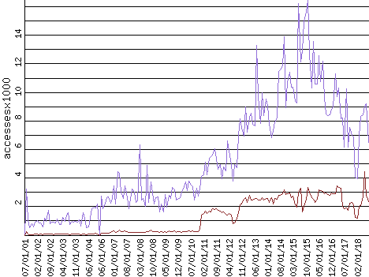

|  | Overall Accesses Home Page Accesses |
| Item | Total Accesses | Total Bytes | Total Visits | Average Accesses | Average Bytes | Average Visits | Latest Accesses | Latest Bytes | Latest Visits |
|---|---|---|---|---|---|---|---|---|---|
| Overall Accesses | 988,609 | 52,646,784,272 | 446,995 | 5,153 | 274,440,230 | 2,330 | 6,474.45 | 498,599,442 | 4,272 |
| Home Page Accesses | 230,580 | 81,326,403 | 103,400 | 1,201 | 423,943 | 539 | 2,371.20 | 782,811 | 806 |